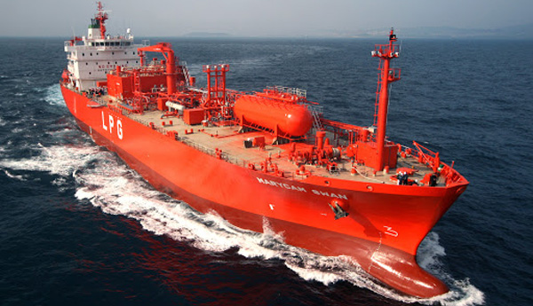
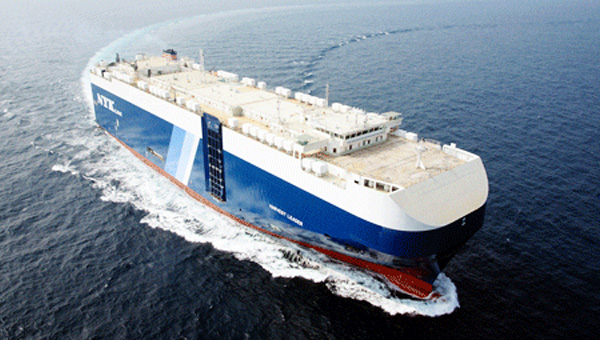
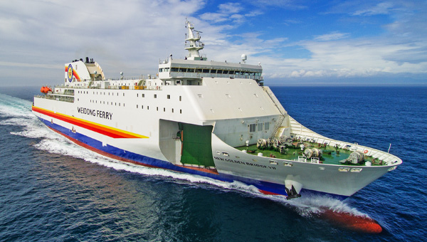

시장점유율 1위를 유지하게하는
독보적인 건조기술
-

부유식 LNG 생산설비
LNG 수송선, 해양정제, LNG 생산에 필요한 경험과 기술을 접목하여 대우조선해양은 세계최초의 FLNG를 성공적으로 Petronas사에 인도하였습니다.
-
고정식 플랫폼
기술 집약적이고 난이도 높은 상부구조물(Topside)과 부피 있는 하부구조물(Substructure)까지 모두 관장하며 세계 오일메이저 고객에게 One-Stop-Solution을 제공합니다.
-
육상 모듈라 플랜트
해양생산설비의 기술력과 경험을 바탕으로 대우조선해양은 모듈라(Modular) 형태의 육상플랜트 공사에서도 그 경쟁력을 입증하고 있습니다.
-

시추설비
거친 북해에서 시추할 수 있는 반잠수식 원유시추선과 극지방에서도 시추할 수 있는 아틱드릴십까지, 축적된 시추선 설계 및 건조 능력을 보유하고 있습니다
-

부유식 발전설비
환경 오염 이슈를 해결할 수 있는 LNG 청정연료를 사용하여 해상에서 전기를 생산하여 육상으로 공급할 수 있는 해상 부유식 발전설비의 설계 건조 기술력을 보유하고 있습니다.